Picture Gallery 3
Genseiryu Karate - International pictures
Please HELP ME: For the correct description of the pictures I am depending on other people who were present at the event or who recognize any of the persons in the pictures.
If you see any mistake in the description or if you have more information or more pictures, please don't hesitate to contact me!
Thanks to sensei Nobuaki Konno and sensei David Roovers for the correct information!
Click on the picture to enlarge to original size! Use the "back arrow" of your browser to return.
| 3-1. European Youth Olympic Days, July 1993. |
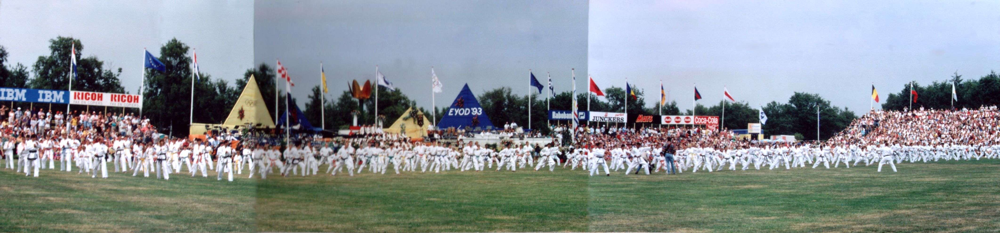 |
{kind=link}
|
3-2. The Dutch crown prince Willem-Alexander at the
European Youth Olympic Days, July 1993. |
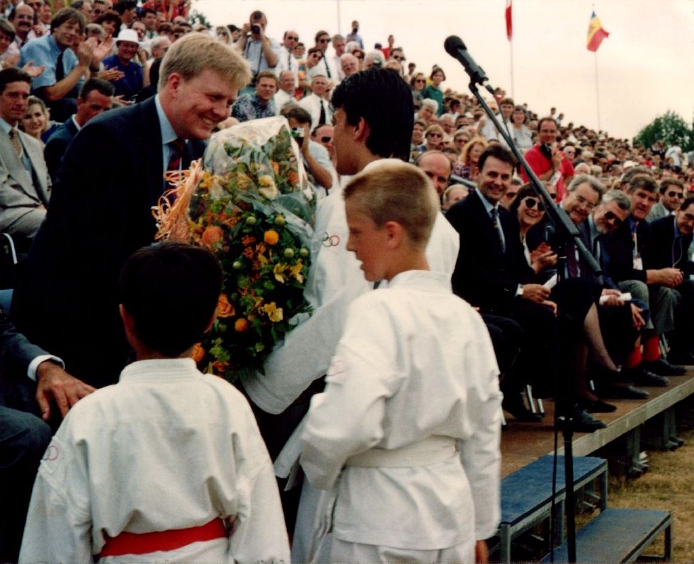 |
 3-3. Genseiryu Netherlands (KLM Karateclub Amstelveen & Genseikan
Anna Paulowna) joined the 35th Genseiryu-Butokukai Anniversary Championship
in Asaka-City, Japan, 1994. On the signs in the front row, from left
to right: Denmark Genshikan, Denmark Genseiryu, Holland (Genseiryu),
Spain (Genseiryu, under Sensei Kohata) and Sri Lanka.
3-3. Genseiryu Netherlands (KLM Karateclub Amstelveen & Genseikan
Anna Paulowna) joined the 35th Genseiryu-Butokukai Anniversary Championship
in Asaka-City, Japan, 1994. On the signs in the front row, from left
to right: Denmark Genshikan, Denmark Genseiryu, Holland (Genseiryu),
Spain (Genseiryu, under Sensei Kohata) and Sri Lanka. |
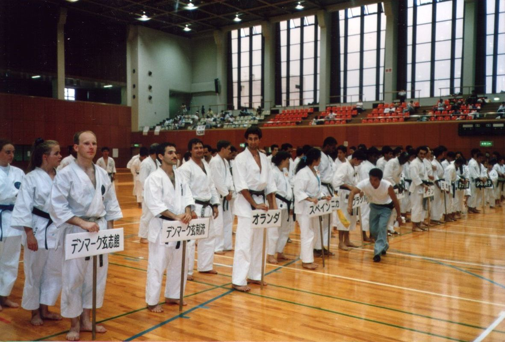 |
|
3-4. Koshiki karate tournament, during the 35th Genseiryu-Butokukai
Championship. From left to right: J. Wijngaards, E. Heini, K. Norimoto and sensei Nobuaki Konno (Genseiryu Netherlands) |
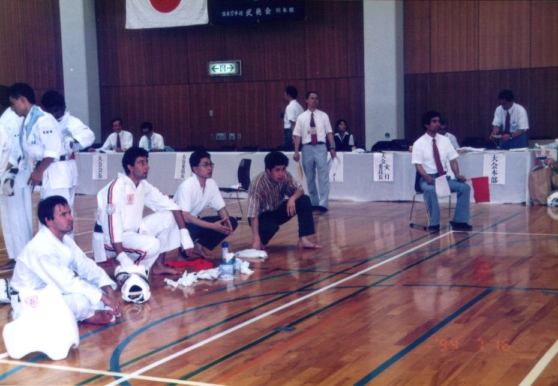 |
|
3-5. Also taken at the 35th Genseiryu-Butokukai Championship.
At the top, from left to right: K. Norimoto, J. Wijngaards. In the middle: sensei N. Konno, sensei J. Igusa, sensei Kunihiko Tosa, sensei Shigeo Suzuki. Below: E.Heini, Sophie & Fredon (at the time Butokukai representatives in Denmark). |
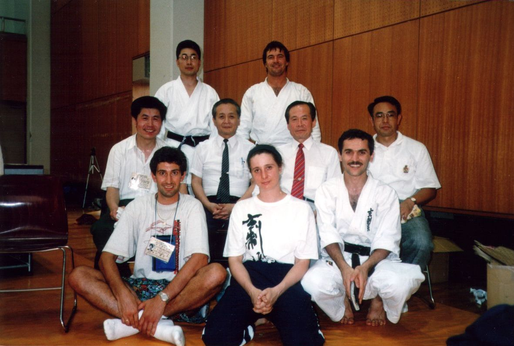 |
|
3-6. At the reception after the 35th Butokukai Championship
in Asaka-City, Japan, 1994. From left to right: two KLM flight attendants, E. Heini, K. Norimoto. J. Wijngaards, sensei Nobuaki Konno (holding a speech), sensei Shigeo Suzuki and sensei Kunihiko Tosa. |
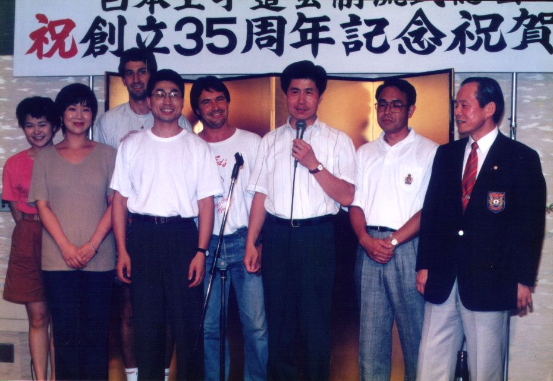 |
|
3-7. Genseiryu Denmark, Finland and the Netherlands welcome Butokukai-sensei
Kunihiko Tosa to Copenhagen, Denmark in 1996. From left to right: sensei Jackie Moos (current President Genseiryu Denmark), Jimmy, sensei Ahcene Bendjazia, sensei Kunihiko Tosa, Jan Christofferson, sensei Nobuai Konno (Genseiryu Netherlands), sensei Jan Laitiainen (Genseiryu Finland). |
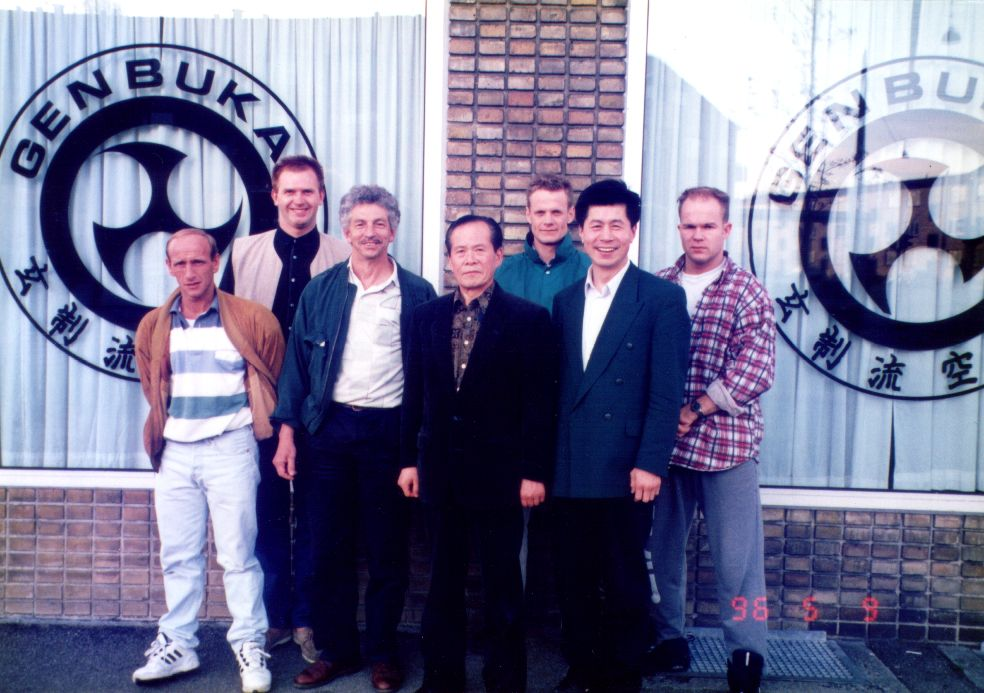 |
|
3-8. Sensei Jackie Moos (current President of Genseiryu Denmark)
has invited Butukukai-sensei Kunihiko Tosa and Genseiryu-sensei
Nobuaki Konno to his dojo in Copenhagen, Denmark, 1996. The three persons standing in the middle (black suit and one in dogi in the middle) are from left to right: sensei Tosa, sensei Jackie Moos, sensei Konno. |
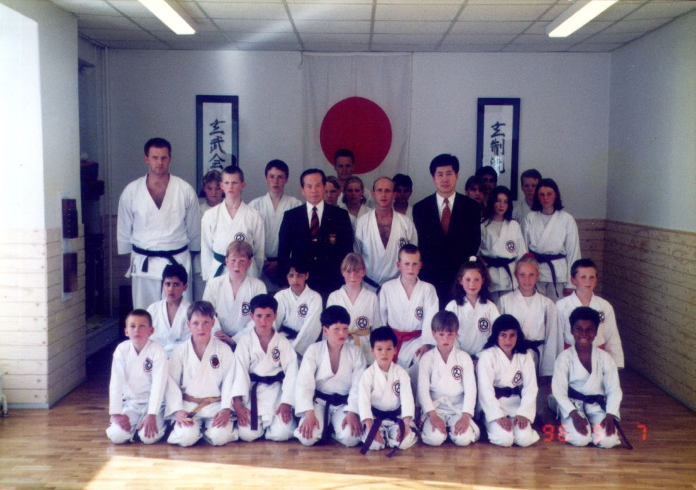 |
|
3-9. Sensei Jackie Moos (current President of Genseiryu Denmark)
has invited sensei H. Saito (second head instructor of Genseiryu),
sensei N. Sugiura (chairman of Japan Genseiryu) and sensei Nobuaki
Konno (Genseiryu Netherlands, Director General of WGKF) to his
dojo in Copenhagen, Denmark in 1997. From left to right (not counting the two persons standing in the back!): sensei N. Sugiura, sensei H. Saito, sensei Jackie Moos and sensei N. Konno. |
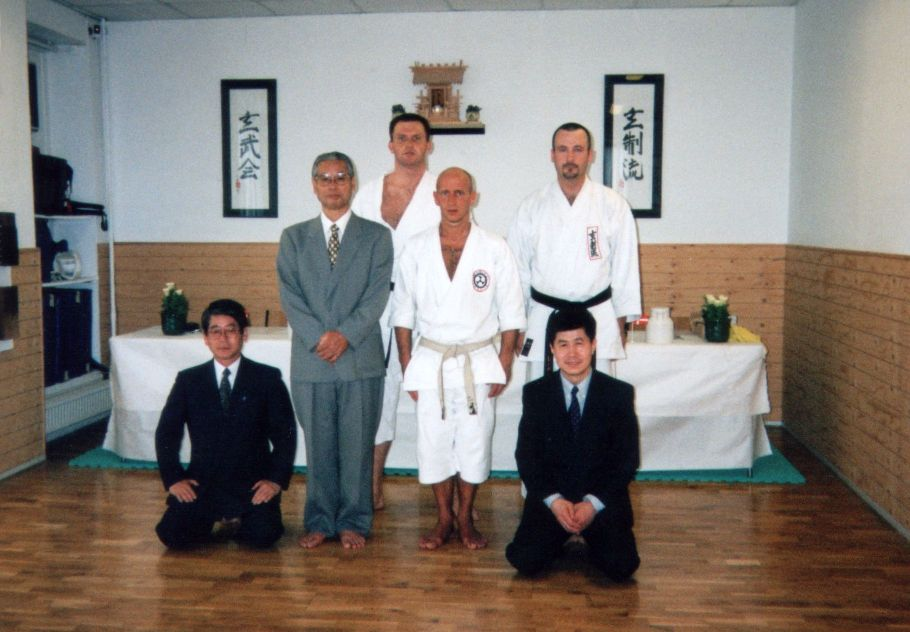 |
{kind=link}
{kind=link}
{kind=link}
{kind=link}
{kind=link}
{kind=link}
{kind=link}
{kind=link}
|
Note: In the past Genseiryu-Butokukai and people from other Genseiryu organizations worked together very closely. Unfortunately this is not possible anymore because the head teacher of the Butokukai organization (sensei Kunihiko Tosa) is trying to expand his activity to other countries. He tries to accomplish this by changing representatives and giving high dan degrees to representatives and practitioners to gain their loyalty without any questions and argues. In Denmark first Fredon Darigard was announced representative in 1996. Then sensei Ahcene Bendjazia became 5th dan by head teacher of Genseiryu-Butokukai sensei K. Tosa and was appointed representative for him and his organization. In 1997 sensei Tosa gave Peter Larsen (nowadays using the name Peter Lee) of Denmark 4th dan Genseiryu-Butokukai (going straight to 4th dan from blue belt Genseiryu and 1st dan Shotokan). He was then appointed the new representative in Denmark and later the representative of Butokukai in Europe. This business system of franchising we disaprove! This system is sometimes refered to as McDojo. We feel we should practice karate from the heart and not for the business. So we reject this kind of attitude and we chose to follow the National Dutch Federation (KBN) in gaining dan degree by passing official examinations. The pictures above show the time of good relationship between head teacher of Genseiryu-Butokukai sensei Kunihiko Tosa and several Genseiryu teachers from Europe. David Roovers, Anna Paulowna, 18 September 2005 |
| 3-10. Continued from previous picture...
From left to right: sensei H. Saito, sensei Nobuhide Sugiura (chairman
of Genseiryu Karate Head Quarter in Ito, Japan) and sensei
Nobuaki Konno. Copenhagen, Denmark (1997). |
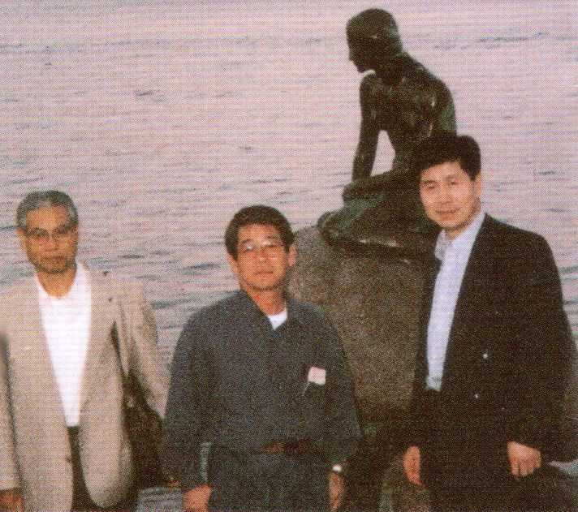 |
| 3-11. Sensei Yasunori Kanai
(left) with sensei Jan Laitiainen (Vice-President of E.G.K.F. and
representative of Genseiryu Finland) in his dojo in Lahti,
Finland, June 2001. |
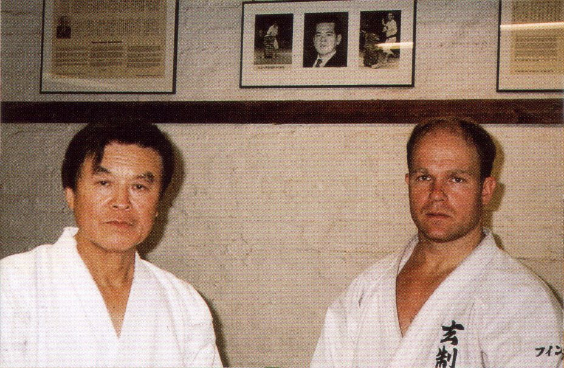 |
| 3-12. Sensei Rodolfo Suárez Alonso
(President of the European Genseiryu Karate Federation and representative
of Genseiryu Karatedo Spain) and sensei Nobuaki Konno (right).
Oviedo, Spain, June 2001. |
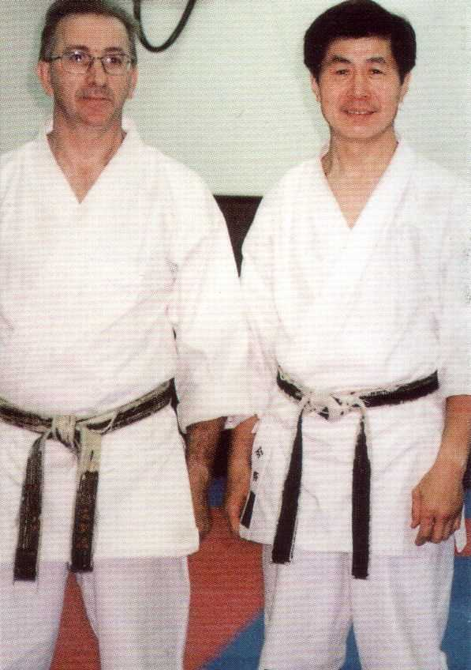 |
| 3-13. Group picture of a bunch of
sensei of Genseiryu Karate. Spain, June 2001. |
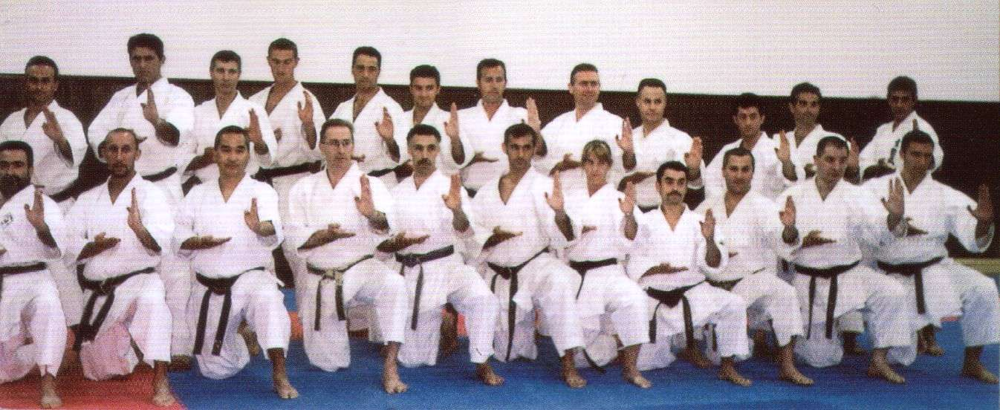 |
| 3-14. From left to right: sensei
Yasunori Kanai, sensei Ahcene Bendjazia and sensei Nobuaki Konno.
Denmark, May 2002. |
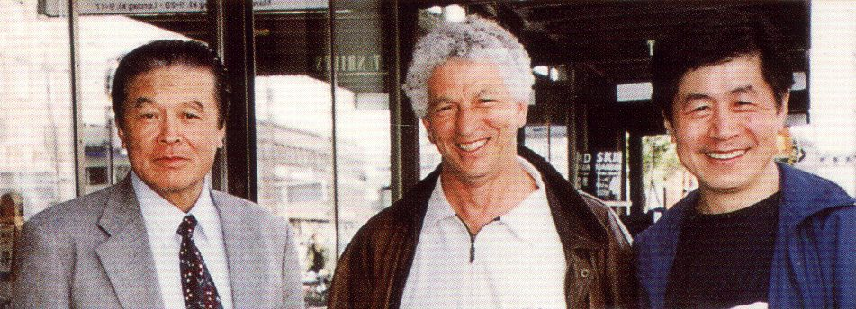 |
| 3-15. Sensei Nobuaki Konno
(right, kneeling) training with his sensei, Shigeo Suzuki (left,
standing) , at the dojo of the Saitama University, Saitama City,
Japan, 2002. |
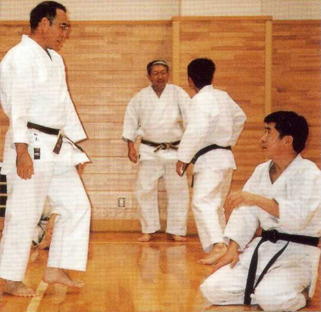 |
| 3-16. At the 16th WKF Championship
in Madrid, Spain, Nov. 2002. From left to right: sensei Nobuaki Konno (Netherlands), sensei Teruo Hayashi (Japan Karatedo Federation, JKF, 9th Dan), sensei Seigo Fujita (Spain), sensei Akio Shuto (Spain). |
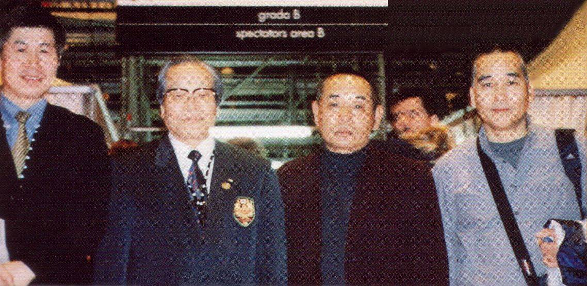 |
| 3-17. Genseiryu Camp in Spain. About 300 members of Genseiryu Karate gathered for this training camp. Spain, 2003 |
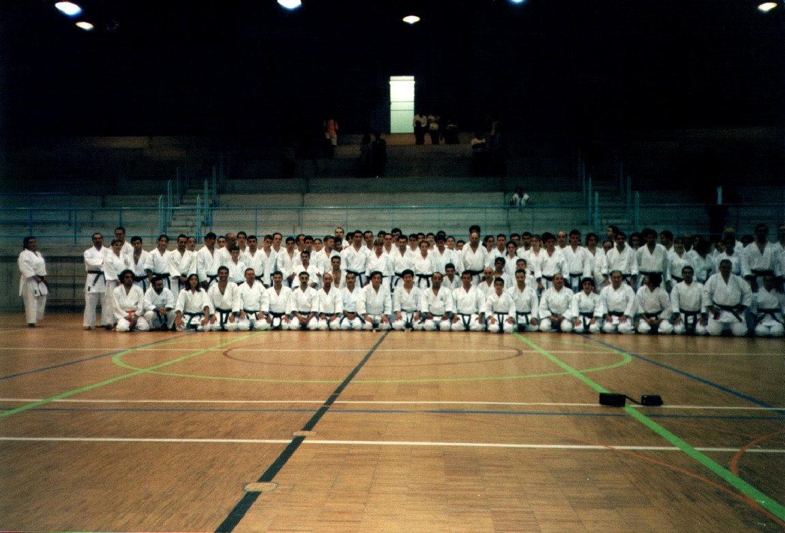 |
{kind=link}
{kind=link}
{kind=link}
{kind=link}
{kind=link}
{kind=link}
{kind=link}
{kind=link}